1髋关节脱位Hip dislocation
原生髋与假体脱位分开讨论 · 尽快复位，不存在可等待的安全时间窗Native and prosthetic dislocations discussed separately · Reduce ASAP — no safe waiting window
官方影像资源（AO Surgery Reference，站内查看）Official imaging (AO Surgery Reference, view on-site)
股骨头骨折 / 髋臼骨折官方页面含 AO 官方 X 线与 CT 图例：The femoral-head / acetabulum pages carry official AO X-ray and CT figures:
AO Surgery Reference — Split fractures of the femoral head
AO 图例版权归 AO Foundation 所有，本课程仅链接原页，未复制、未热链（AO 未提供公开再发布许可）。AO figures are © AO Foundation; this course links to the original pages only — not copied or hotlinked (AO offers no open redistribution license).
解剖与机制Anatomy & mechanism
- 髋关节是深球窝关节，骨性结构稳定，创伤性原生髋脱位通常由高能量暴力所致。The hip is a deep ball-and-socket joint, highly stable; dislocation requires high-energy trauma.
- 后脱位最常见（约90%），前脱位少见（约10%）。Posterior dislocation is most common (~90%); anterior is uncommon (~10%).
- 典型机制是仪表盘伤：屈髋、内收位下，沿股骨传来的轴向暴力把股骨头顶出髋臼。Classic mechanism is dashboard injury: axial load through the femur with the hip flexed and adducted drives the head out.
- 前脱位多由外展、外旋暴力造成。Anterior dislocation usually follows abduction/external-rotation force.
原生髋 vs 假体脱位：机制有何不同？Native vs prosthetic: how do mechanisms differ?
- 原生髋脱位：高能量创伤，关节囊与周围软组织撕裂，复位后多较稳定。Native dislocation: high-energy trauma with capsular/soft-tissue tearing; usually stable after reduction.
- 假体脱位：可发生于低能量（如不当体位）；与体位、假体位置、软组织张力关系更大，复发风险更高。Prosthetic dislocation: can follow low energy (e.g., risky positions); relates more to position, component placement and soft-tissue tension, with higher recurrence risk.
- 两者复位后要评估的问题不同：原生髋重点查合并骨折；假体要找脱位的原因。Post-reduction assessment differs: native hips need fracture screening; prosthetic hips need the cause of instability identified.
初评和红旗Initial assessment & red flags
- 先完成创伤初评（ABCDE），再处理脱位；不要被畸形吸引而漏掉全身评估。Complete the primary survey (ABCDE) first; don't let the deformity distract from whole-patient assessment.
- 初评及每次复位操作前后，都要记录神经血管状态，这是医疗文书的关键。Document neurovascular status at initial assessment and before and after each reduction — essential documentation.
- 坐骨神经损伤：后脱位可伤及坐骨神经，尤其腓总神经支 → 足下垂、足背感觉减退。Sciatic nerve injury: posterior dislocation can injure the sciatic nerve, especially the peroneal division → foot drop, dorsal foot sensory loss.
- 前脱位注意股神经、股动静脉。Anterior dislocation: watch the femoral nerve and vessels.
- 合并骨折：髋臼后壁/后柱、股骨头、股骨颈——后脱位合并股骨颈骨折时，禁止盲目闭合复位。Associated fractures: posterior wall/column, femoral head, femoral neck — with a femoral neck fracture, do not attempt blind closed reduction.
- 开放性脱位罕见，一旦发生按开放性关节损伤处理。Open dislocation is rare; manage as an open joint injury when it occurs.
影像 / 分类Imaging / classification
- 骨盆正位 + 患髋正侧位；复位后常规 CT：确认同心复位、关节内游离骨片、隐匿的髋臼/股骨头骨折。AP pelvis + hip views; routine post-reduction CT: confirm concentric reduction, intra-articular fragments, occult acetabular/femoral-head fractures.
- Thompson-Epstein 描述后脱位类型，Pipkin 描述股骨头骨折——都是描述工具。Thompson-Epstein describes posterior patterns, Pipkin describes femoral-head fractures — both are descriptive tools.
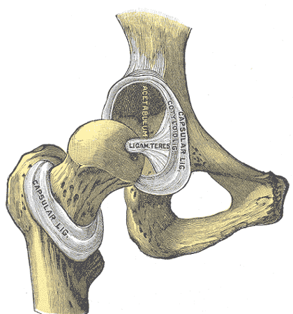
观察点：右髋关节前方观（关节囊已大部切除）：股骨头、髋臼、圆韧带清晰可见。正常时股骨头深坐于髋臼内，骨性匹配非常稳定——这正是脱位需要高能量暴力的解剖基础。Observation: anterior view of the right hip with the capsule largely removed: femoral head, acetabulum and ligamentum teres are visible. Normally the head sits deep in the socket with a highly stable bony match — the anatomic reason traumatic native dislocation usually follows high-energy trauma.
能证明：正常髋关节的骨性结构关系。不能证明：脱位方向、复位方法；1918 年解剖图谱，非影像。Shows: normal bony relationships of the hip. Does not show: dislocation direction or reduction technique; a 1918 anatomy plate, not imaging.
来源：Henry Gray《Anatomy of the Human Body》(1918) Plate 342，绘图 Henry Vandyke Carter，公有领域 · Wikimedia Commons 原页 · 独立图例，与本单元其他图非同一病例Source: Henry Gray, Anatomy of the Human Body (1918), Plate 342, illustrated by Henry Vandyke Carter, public domain · Wikimedia Commons file page · standalone figure, not the same case as other figures in this unit

观察点：44 岁男性车祸后右髋后脱位。(a) 脱位正位 X 线：股骨头向后上脱出髋臼；(b) 复位后正位：Shenton 线中断、内侧关节间隙增宽——复位不匹配，提示关节内嵌顿骨软骨游离体；(c) CT 证实关节内侧骨软骨碎片（后经开放取出）；(d) 取出后复位恢复同心圆。本例说明复位后仍需检查关节匹配与残留骨片；不能用单例推导普遍检查策略。Observation: posterior dislocation of the right hip in a 44-year-old man after a crash. (a) Dislocated AP X-ray: femoral head displaced posterosuperiorly out of the acetabulum; (b) post-reduction AP: broken Shenton's line with widened medial joint space — incongruent reduction, suggesting an entrapped osteochondral loose body; (c) CT confirms a medial osteochondral fragment (later removed openly); (d) concentric reduction restored after removal. This case illustrates why congruence and residual fragments matter after reduction; a single case does not establish a universal imaging policy.
能证明：后脱位的 X 线表现；复位不匹配的征象（Shenton 线中断）；CT 发现游离体的价值。不能证明：股骨头血供状态；坐骨神经状态（需查体）。Shows: the X-ray appearance of posterior dislocation; signs of incongruent reduction (broken Shenton's line); the value of CT for loose bodies. Does not show: femoral head blood supply; sciatic nerve status (needs examination).
来源：Karthik K 等，"Incongruent reduction following post-traumatic hip dislocations as an indicator of intra-articular loose bodies"，《Indian Journal of Orthopaedics》2011，Fig. 1，CC BY 2.0（attribution license，许可说明）· PMC 原文 · 独立病例Source: Karthik K et al., "Incongruent reduction following post-traumatic hip dislocations as an indicator of intra-articular loose bodies", Indian Journal of Orthopaedics 2011, Fig. 1, CC BY 2.0 attribution license (license) · PMC article · standalone case
拓展（折叠）：假体脱位与少见脱位方向Extension (collapsed): prosthetic dislocation and uncommon directions
以下两图为鉴别拓展：假体脱位机制不同（体位/假体位置/软组织张力，可低能量发生），上方脱位少见。主课以原生髋急性后脱位（图 1-2）为准。The two figures below are extension material: prosthetic dislocation has a different mechanism (position/component placement/soft-tissue tension; can follow low energy), and superior dislocation is uncommon. The core teaching uses acute native posterior dislocation (Fig 1-2).
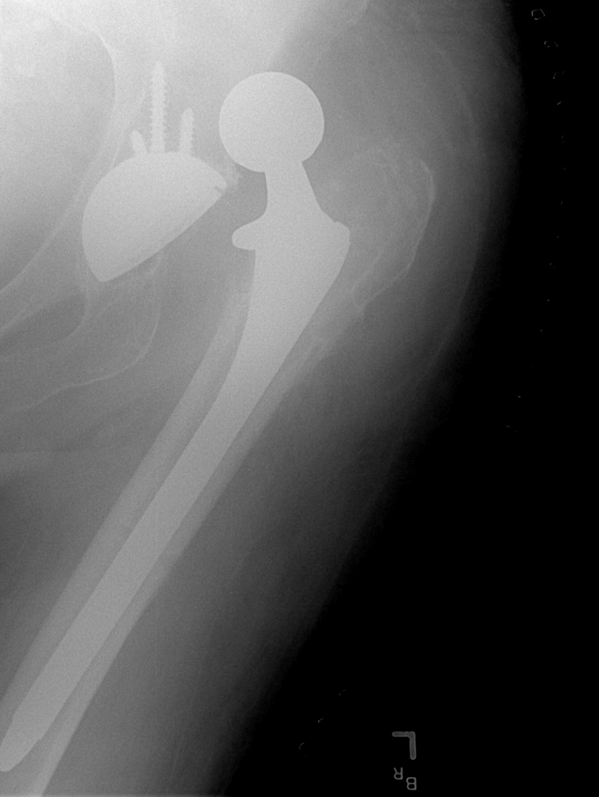
观察点：股骨柄假体头脱出髋臼杯、向上移位。假体脱位可见金属部件，机制常与体位、假体位置、软组织张力相关，可发生于低能量，复发风险更高——这正是课程把原生髋与假体脱位分开讨论的原因。Observation: the femoral stem head lies outside and above the acetabular cup. Metal components are visible; the mechanism often relates to position, component placement and soft-tissue tension, can follow low energy, and carries higher recurrence risk — why this course discusses native and prosthetic dislocations separately.
能证明：假体脱位的影像表现（假体头与臼杯分离）。不能证明：脱位原因（需结合体位史与假体位置评估）。Shows: the imaging appearance of prosthetic dislocation (head-cup separation). Does not show: the cause of dislocation (needs position history and component assessment).
来源：Bill Rhodes（Asheville），Wikimedia Commons，CC BY 2.0（许可）· 原页 · 独立病例Source: Bill Rhodes (Asheville), via Wikimedia Commons, CC BY 2.0 (license) · file page · standalone case
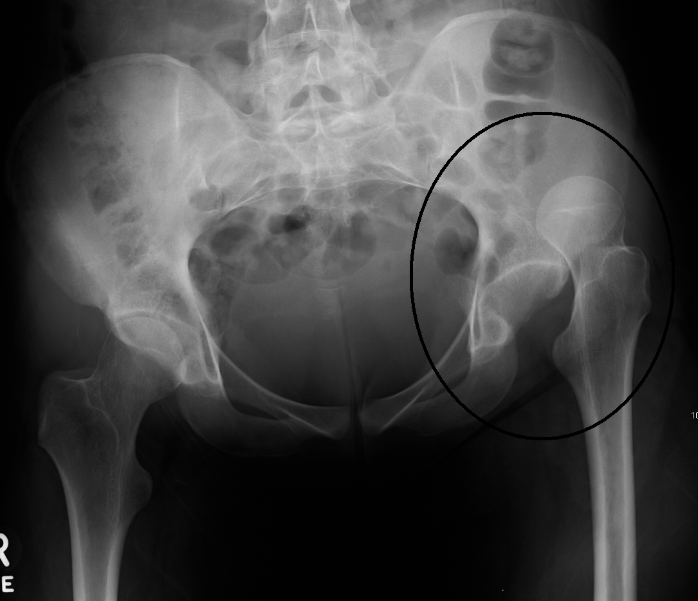
观察点：骨盆正位：左侧（图片右侧）股骨头向上移位、髋臼空虚，为创伤后上方脱位（上传者原标注圈出）。上方脱位少见，临床最常见的是后脱位（约90%，见图 1-2）；读片要点相同——看股骨头是否位于髋臼内。Observation: AP pelvis: the left femoral head (image right) is displaced superiorly with an empty acetabulum — post-traumatic superior dislocation (circled by the uploader). Superior dislocation is uncommon; posterior dislocation (~90%, see Fig 1-2) is most common clinically; the reading point is the same — is the head inside the acetabulum?
能证明：脱位时"髋臼空虚、股骨头异位"的 X 线征象。不能证明：脱位方向的分布（单例不能代表 90% 后脱位）；不能显示关节囊撕裂与坐骨神经状态。Shows: the "empty acetabulum, displaced head" sign of dislocation. Does not show: the distribution of dislocation directions (one case cannot represent ~90% posterior); cannot show capsular tearing or sciatic nerve status.
来源：James Heilman, MD，Wikimedia Commons，CC BY-SA 3.0（许可）· 原页 · 独立病例Source: James Heilman, MD, via Wikimedia Commons, CC BY-SA 3.0 (license) · file page · standalone case
AO 原则如何适用How AO principles apply
- 解剖复位：脱位本身要求尽快闭合复位，恢复关节的同心圆关系。Anatomic reduction: the dislocation itself demands urgent closed reduction to restore a concentric joint.
- 稳定固定：合并的髋臼、股骨头骨折，按骨折的 AO 原则固定。Stable fixation: associated acetabular/femoral-head fractures are fixed per AO fracture principles.
- 早期活动：在关节稳定、骨折允许的前提下尽早活动。Early mobilization: as soon as joint stability and fractures allow.
复位操作的基本要求（原则层面）Basic requirements for reduction (principles)
- 在充分镇静/麻醉和肌松下进行，避免暴力。Perform under adequate sedation/anesthesia with muscle relaxation; avoid force.
- 复位后立即复查神经血管状态和影像。Immediately recheck neurovascular status and imaging after reduction.
- 本课程不演示具体复位手法。Specific reduction maneuvers are not demonstrated in this course.
治疗选择与限制Treatment options & limitations
- 尽快复位，不存在可等待的"安全时间窗"。未复位的脱位持续威胁股骨头血供，延迟增加缺血坏死风险——"越快越好"不是"6小时内安全"。Reduce ASAP — there is no safe waiting window. An unreduced dislocation keeps threatening head blood supply; delay raises AVN risk. "As soon as possible" does not mean "safe within 6 hours".
- 原生髋：无阻碍闭合复位的合并损伤时，通常先尝试闭合复位；复位失败、复位后不稳定或合并需固定的骨折 → 切开复位。Native hip: usually attempt closed reduction when associated injuries do not preclude it; failed reduction, post-reduction instability, or fractures needing fixation → open reduction.
- 假体脱位：多数可闭合复位；复位后必须评估脱位原因（体位习惯、假体位置、软组织张力），并做防脱位宣教。Prosthetic dislocation: usually reducible closed; afterwards the cause (habitual positions, component placement, soft-tissue tension) must be assessed, with dislocation-precaution education.
- 限制：合并股骨颈骨折时，闭合复位可能加重骨折移位，需按脱位合并骨折的联合损伤原则处理（见来源）。Limitation: with a femoral neck fracture, closed reduction may worsen displacement — manage as a combined dislocation-fracture injury (see sources).
并发症 / 随访Complications / follow-up
- 股骨头缺血坏死（AVN）：随访中用影像监测，坏死可在伤后一段时间内才显现。Avascular necrosis (AVN) of the femoral head: monitor with imaging; it may declare itself after an interval.
- 坐骨神经损伤：多数可逐渐恢复，需定期随访神经功能。Sciatic nerve injury: often recovers gradually; follow neurologic function.
- 创伤性关节炎：关节面损伤越重，远期风险越高。Post-traumatic arthritis: greater articular injury → higher long-term risk.
- 假体再脱位：按手术入路、假体与稳定性进行个体化体位防护宣教。Prosthetic re-dislocation: teach position precautions per surgeon advice.
病例自测Case quiz
Q1 · 28岁男性，车祸后右下肢呈屈曲、内收、内旋、缩短畸形，足背感觉减退、足下垂。最可能的诊断和最需要警惕的神经是？（合成教学病例）Q1 · A 28-year-old man after a car crash: right leg flexed, adducted, internally rotated and shortened, with dorsal foot sensory loss and foot drop. Most likely diagnosis and nerve at risk? (synthetic teaching case)
回答正确 ✓Correct ✓
再想想 ✗Try again ✗
答案：B。Answer: B.屈曲内收内旋缩短是后脱位典型体位；后脱位最易伤及坐骨神经，其中腓总神经支最脆弱，表现为足下垂。Flexed, adducted, internally rotated and shortened is classic for posterior dislocation; the sciatic nerve — especially its peroneal division — is most vulnerable, causing foot drop.
Q2 · 关于髋关节脱位复位时机的说法，正确的是？Q2 · Which statement about timing of hip reduction is correct?
回答正确 ✓Correct ✓
再想想 ✗Try again ✗
答案：B。Answer: B.未复位的脱位持续威胁股骨头血供。"6小时"不是可以放心等待的窗口，而是越快越好。CT是复位后的常规检查，不是复位的前提。An unreduced dislocation keeps threatening head blood supply. "6 hours" is not a window to wait inside — sooner is better. CT is routine after reduction, not a prerequisite.
来源与媒体许可Sources & media licensing
- AO Surgery Reference — Split fractures of the femoral head (definition)
- AO Surgery Reference — Femoral neck and head fractures with hip dislocation (definition)
- AO Surgery Reference — Total hip arthroplasty for femoral neck and head fractures with hip dislocation
- AO Surgery Reference — Characteristics of associated fracture types (acetabulum)
2股骨骨折Femur fractures
近端 31 / 骨干 32 / 远端 33 —— 三段的治疗逻辑完全不同Proximal 31 / shaft 32 / distal 33 — each segment follows different logic
官方影像资源（AO Surgery Reference，站内查看）Official imaging (AO Surgery Reference, view on-site)
股骨干骨折官方术式页面含 AO 官方 X 线图例（顺行/逆行髓内钉入路）：The femoral-shaft procedure pages carry official AO X-ray figures (antegrade/retrograde nailing approaches):
AO Surgery Reference — All approaches to the femoral shaft
AO 图例版权归 AO Foundation 所有，本课程仅链接原页，未复制、未热链（AO 未提供公开再发布许可）。AO figures are © AO Foundation; this course links to the original pages only — not copied or hotlinked (AO offers no open redistribution license).
解剖与机制Anatomy & mechanism
- 股骨按 AO/OTA 分为三段：近端 31、骨干 32、远端 33。The femur is divided into three AO/OTA segments: proximal 31, shaft 32, distal 33.
- 近端 31股骨颈囊内骨折直接威胁股骨头血供；转子间骨折在囊外。Proximal 31Intracapsular neck fractures directly threaten femoral-head blood supply; intertrochanteric fractures are extracapsular.
- 骨干 32多为高能量暴力（车祸、高处坠落），肌肉牵拉使骨折端明显移位。Shaft 32Usually high-energy trauma (traffic, falls from height); muscle pull displaces fragments markedly.
- 远端 33常累及膝关节面；双峰分布——年轻人高能量、老年人低能量骨质疏松。Distal 33Often involves the knee joint; bimodal — high energy in the young, low-energy osteoporotic in the elderly.
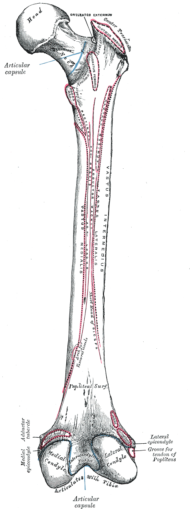
观察点：右股骨后面观：股骨头、股骨颈、大小转子、骨干、内外侧髁。对照 AO/OTA：近端 31（头颈转子区）、骨干 32、远端 33（髁区）——三段的血供风险、固定方式与康复逻辑都不同。Observation: posterior view of the right femur: head, neck, greater/lesser trochanters, shaft, condyles. Maps to AO/OTA: proximal 31, shaft 32, distal 33 — blood-supply risk, fixation and rehab logic differ by segment.
能证明：三段的解剖分界。不能证明：骨折本身；1918 年解剖图谱，非影像。Shows: the anatomic boundaries of the three segments. Does not show: any fracture; a 1918 anatomy plate, not imaging.
来源：Henry Gray《Anatomy of the Human Body》(1918) Plate 245，绘图 Henry Vandyke Carter，公有领域 · Wikimedia Commons 原页 · 独立图例Source: Henry Gray, Anatomy of the Human Body (1918), Plate 245, illustrated by Henry Vandyke Carter, public domain · Wikimedia Commons file page · standalone figure
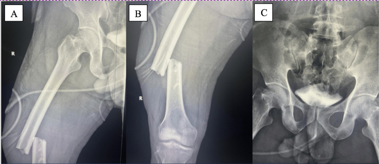
观察点：35 岁男性、100 km/h 正面撞击车祸后右股骨中段闭合骨折。(A)(B) 股骨正位 X 线：骨干中段骨折、断端明显移位；(C) 骨盆正位（术前评估的一部分）。这是典型的高能量创伤性股骨干骨折——对应课程"骨干 32 多为高能量暴力，肌肉牵拉使骨折端明显移位"。Observation: closed right midshaft femoral fracture in a 35-year-old man after a frontal crash at ~100 km/h. (A)(B) AP femur X-rays: midshaft fracture with marked displacement; (C) AP pelvis (part of preoperative assessment). This is a typical high-energy traumatic femoral shaft fracture — matching the course point "32 shaft fractures are mostly high-energy, with muscle pull displacing the fragments".
能证明：高能量股骨干骨折的 X 线表现（断端明显移位）。不能证明：同侧股骨颈隐匿骨折（需加拍髋部影像）；固定方式（本图为术前片）。Shows: the X-ray appearance of a high-energy shaft fracture (marked displacement). Does not show: an occult ipsilateral femoral neck fracture (needs dedicated hip imaging); the fixation method (preoperative film).
来源：Alzahrani JA 等，Cureus 2023，Fig. 1，CC BY（原文未标版本；许可）· PMC 原文 · 独立病例Source: Alzahrani JA et al., Cureus 2023, Fig. 1, CC BY (version unstated in source; license) · PMC article · standalone case
拓展（折叠）：非典型股骨骨折（双膦酸盐相关）Extension (collapsed): atypical femoral fracture (bisphosphonate-associated)
下图为鉴别拓展：长期双膦酸盐治疗相关非典型股骨干骨折可发生于低能量、骨折线形态不同（横形、骨皮质增厚）。不能以此代表高能量创伤——主课以创伤性股骨干骨折（图 2-2）为准。The figure below is extension material: bisphosphonate-associated atypical femoral shaft fractures can follow low energy and look different (transverse line, cortical thickening). It cannot represent high-energy trauma — the core teaching uses traumatic femoral shaft fracture (Fig 2-2).
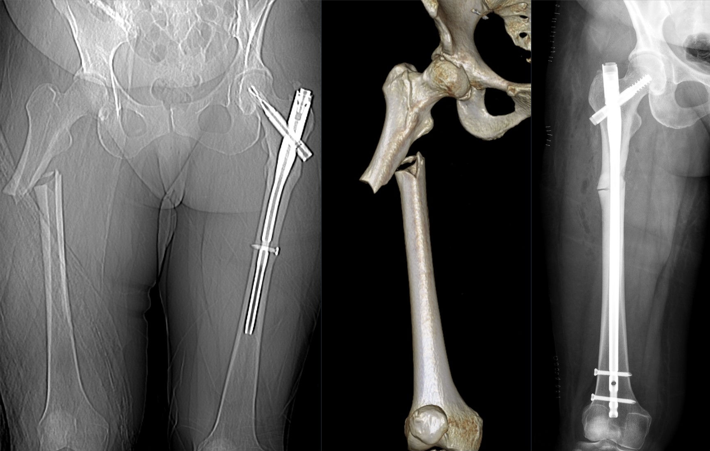
观察点：组合图（CT 定位像 + 三维重建 + 术后 X 线）：右侧股骨近端骨干横形骨折，骨折线基本横贯，外侧皮质原有增厚（既往应力性改变）；术后 X 线示髓内钉贯穿骨折端。本例为双膦酸盐相关的非典型骨折（低能量），用于观察横形形态与髓内钉固定；创伤性股骨干骨折多为高能量暴力（见图 2-2）。Observation: composite (CT scout + 3D reconstruction + post-op X-ray): transverse fracture of the proximal femoral shaft with pre-existing lateral cortical thickening (prior stress change); the post-op film shows an intramedullary nail spanning the fracture. This is a bisphosphonate-related atypical fracture (low energy), shown here for the transverse morphology and nailing; traumatic shaft fractures are usually high energy (see Fig 2-2).
能证明：横形骨折形态、髓内钉的固定方式。不能证明：高能量创伤的典型表现；不能代表所有股骨干骨折的病因。Shows: transverse fracture morphology and intramedullary nailing. Does not show: typical high-energy trauma; does not represent all causes of femoral shaft fracture.
来源：Hellerhoff，Wikimedia Commons，CC BY-SA 4.0（许可）· 原页 · 独立病例Source: Hellerhoff, via Wikimedia Commons, CC BY-SA 4.0 (license) · file page · standalone case
初评和红旗Initial assessment & red flags
- 股骨干骨折出血量大，按多发伤流程评估循环；老年人近端骨折重点评估全身合并症。Shaft fractures bleed significantly — assess circulation as in polytrauma; in elderly proximal fractures, assess comorbidities.
- 同侧股骨颈隐匿骨折：股骨干骨折必须加拍髋部，以免漏诊。Occult ipsilateral femoral-neck fracture: shaft fractures need hip imaging to avoid missing it.
- 开放骨折：尽早清创覆盖，抗生素与 tetanus 按规范。Open fracture: early debridement and coverage; antibiotics and tetanus per protocol.
- 远端骨折：查足背/胫后动脉搏动与末梢灌注（皮色、皮温、毛细血管再充盈），警惕血管损伤；注意脉搏存在不能完全排除血管伤；查腓总神经。Distal fractures: check dorsalis pedis/posterior tibial pulses and distal perfusion (color, warmth, capillary refill); note a present pulse does not fully exclude vascular injury; check the peroneal nerve.
- 多发伤：股骨干骨折常合并胸、骨盆损伤。Polytrauma: shaft fractures often accompany chest/pelvic injuries.
影像 / 分类（三段）Imaging / classification (by segment)
- 近端：骨盆正位 + 患髋正侧位；Garden 描述股骨颈移位程度（描述性）。Proximal: AP pelvis + hip views; Garden describes neck displacement (descriptive).
- 骨干：全长股骨正侧位（含髋、膝关节）；AO/OTA 32 简单 / 楔形 / 复杂（描述性）。Shaft: full-length femur AP/lateral including hip and knee; AO/OTA 32 simple / wedge / complex (descriptive).
- 远端：膝正侧位 + CT（排查关节内劈裂如 Hoffa）；33 关节外 / 部分关节内 / 完全关节内（描述性）。Distal: knee AP/lateral + CT (detect articular splits such as Hoffa); 33 extra-articular / partial-articular / complete-articular (descriptive).
AO 原则如何适用（三段）How AO principles apply (by segment)
- 近端：解剖复位 + 稳定固定，核心是保护股骨头血供；移位股骨颈骨折在老年患者中，关节置换是讨论选项之一。Proximal: anatomic reduction + stable fixation, centered on protecting head blood supply; arthroplasty is one discussed option for displaced neck fractures in the elderly.
- 骨干：髓内钉是成人常规选择——闭合穿钉、微创、保护骨折端血肿，允许早期活动。Shaft: intramedullary nailing is routine in adults — closed, minimally invasive, preserves fracture hematoma, allows early mobilization.
- 远端：关节面解剖复位 + 稳定固定 + 早期活动；干骺端粉碎与骨质疏松是难点。Distal: anatomic articular reduction + stable fixation + early motion; metaphyseal comminution and osteoporosis are the challenges.
骨干：顺行 vs 逆行髓内钉（原则层面）Shaft: antegrade vs retrograde nailing (principles)
- 顺行钉是常用入路；逆行钉对远端 1/3 骨折有优势，两者总体疗效相近（见来源）。Antegrade nailing is commonly used; retrograde nails suit distal-third fractures, with similar overall outcomes (see sources).
- 微创钢板（MIPO）可减少肌肉剥离与血运破坏，按骨折部位选择入路。Minimally invasive plating reduces muscle stripping and vascular compromise; approach varies by fracture location.
治疗选择与限制（三段）Treatment options & limitations (by segment)
- 近端：选项包括空心钉、滑动髋螺钉（DHS）、髓内钉（转子间）、关节置换。限制：囊内骨折的缺血坏死风险、骨质疏松、患者生理储备——方案必须个体化。Proximal: options include cannulated screws, sliding hip screw (DHS), cephalomedullary nailing (intertrochanteric), arthroplasty. Limits: AVN risk in intracapsular fractures, osteoporosis, physiologic reserve — decisions must be individualized.
- 骨干：髓内钉为常规。限制：开放骨折、多发伤（可先损伤控制外固定）、严重粉碎。非手术用于无手术条件、不能耐受手术等个体情况（AO Surgery Reference 明确）。Shaft: nailing is routine. Limits: open fractures, polytrauma (damage-control ex-fix first), severe comminution. Nonoperative for lack of surgical capacity, inability to tolerate surgery, or other individual factors (stated in AO Surgery Reference).
- 远端：锁定钢板、逆行髓内钉。限制：严重关节粉碎、开放伤、血管损伤需先处理血管。Distal: locking plates, retrograde nailing. Limits: severe articular comminution, open injury, vascular injury requiring vascular care first.
并发症 / 随访Complications / follow-up
- 不愈合 / 延迟愈合、畸形愈合、感染、内固定失败。Nonunion / delayed union, malunion, infection, fixation failure.
- 近端：股骨头缺血坏死；骨干：多发伤者警惕脂肪栓塞；远端：膝僵硬、创伤性关节炎。Proximal: AVN; shaft: fat embolism in polytrauma; distal: knee stiffness, post-traumatic arthritis.
- 随访：按计划复查影像、渐进负重、功能康复；内固定激惹可在骨折愈合后、经专科评估考虑取出（无统一时间标准）。Follow up with scheduled imaging, progressive weight bearing and rehab; symptomatic implants may be removed after healing, following specialist assessment (no universal timing).
病例自测Case quiz
Q1 · 24岁男性，车祸致右股骨干横形骨折，闭合。按 AO Surgery Reference，常规治疗选择是？（合成教学病例）Q1 · A 24-year-old man with a closed transverse femoral shaft fracture after a crash. Per AO Surgery Reference, the routine choice is? (synthetic teaching case)
回答正确 ✓Correct ✓
再想想 ✗Try again ✗
答案：C。Answer: C.成人股骨干骨折通常手术，髓内钉为常规；非手术用于无手术条件、不能耐受手术等个体情况。Adult shaft fractures are normally treated operatively with nailing; nonoperative care is for lack of surgical capacity, inability to tolerate surgery, or other individual factors.
Q2 · 股骨干骨折的影像检查中，最容易漏诊的合并伤是？Q2 · In femoral shaft fractures, the most easily missed associated injury on imaging is?
回答正确 ✓Correct ✓
再想想 ✗Try again ✗
答案：A。Answer: A.这就是要求拍全长股骨（含髋、膝）的原因：同侧股骨颈隐匿骨折一旦漏诊后果严重。This is why full-length femur films including hip and knee are required: a missed neck fracture has serious consequences.
Q3 · 远端股骨骨折，CT最重要的价值是？Q3 · In distal femur fractures, the most important value of CT is?
回答正确 ✓Correct ✓
再想想 ✗Try again ✗
答案：B。Answer: B.相当一部分远端股骨骨折有平片看不见的关节内延伸，CT 决定你是否需要处理关节面。A substantial share of distal femur fractures have occult intra-articular extension; CT determines whether the joint surface needs addressing.
来源与媒体许可Sources & media licensing
- AO Surgery Reference — Sliding hip screw with antirotation screw (basicervical)
- AO Surgery Reference — All approaches to the femoral shaft
- AO Surgery Reference — Nonoperative treatment with limited resources (simple transverse middle 1/3)
- AO Surgery Reference — Patient examination (distal femur)
- AO Surgery Reference — 33C1 Complete articular fracture, simple articular, simple metaphyseal (definition)
3髌骨骨折Patella fracture
伸膝装置是核心——先判断装置断没断，再谈固定方式The extensor mechanism is central — assess it first, then discuss fixation
官方影像资源（AO Surgery Reference，站内查看）Official imaging (AO Surgery Reference, view on-site)
髌骨骨折官方页面含 AO 官方影像与分型图例（横形骨折与伸膝装置断裂的关系）：The patella pages carry official AO imaging and classification figures (transverse fractures and extensor mechanism disruption):
AO Surgery Reference — 34C1.1/.2 Complete articular, frontal/coronal simple fracture
AO 图例版权归 AO Foundation 所有，本课程仅链接原页，未复制、未热链（AO 未提供公开再发布许可）。AO figures are © AO Foundation; this course links to the original pages only — not copied or hotlinked (AO offers no open redistribution license).
解剖与机制Anatomy & mechanism
- 伸膝装置是一条链：股四头肌 → 股四头肌腱 → 髌骨 → 髌腱 → 胫骨结节。任何一环断裂，伸膝都受影响。The extensor mechanism is a chain: quadriceps → quadriceps tendon → patella → patellar tendon → tibial tuberosity. A break anywhere impairs knee extension.
- 直接暴力（跌倒膝着地、仪表盘撞击）：多为粉碎骨折。Direct trauma (fall onto the knee, dashboard impact): often comminuted.
- 间接暴力（屈膝位股四头肌猛烈收缩）：多为横形骨折，常伴分离。Indirect force (violent quadriceps contraction with knee flexed): often transverse, frequently displaced.
- 髌骨骨折常合并髌股关节面损伤。Patellar fractures often injure the patellofemoral articular surface.
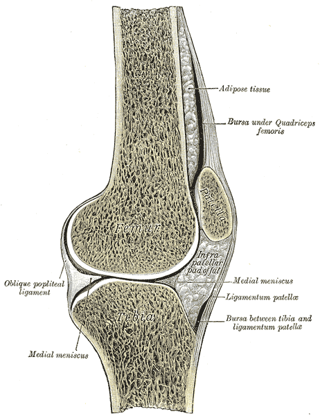
观察点：右膝关节矢状切面：股骨、髌骨（patella）、髌韧带（ligamentum patellae）、胫骨、半月板。伸膝装置是一条链：股四头肌腱（上）→ 髌骨 → 髌韧带 → 胫骨结节——任何一环断裂，伸膝都受影响，这正是"先判断装置断没断，再谈固定方式"的解剖依据。Observation: sagittal section of the right knee: femur, patella, patellar ligament, tibia, meniscus. The extensor mechanism is a chain — quadriceps tendon → patella → patellar ligament → tibial tuberosity; a break anywhere impairs knee extension — the anatomic basis for "assess the mechanism first, then discuss fixation".
能证明：伸膝装置的解剖连续关系。不能证明：骨折；1918 年解剖图谱，非影像。Shows: the anatomic continuity of the extensor mechanism. Does not show: any fracture; a 1918 anatomy plate, not imaging.
来源：Henry Gray《Anatomy of the Human Body》(1918) Plate 350，绘图 Henry Vandyke Carter，公有领域 · Wikimedia Commons 原页 · 独立图例Source: Henry Gray, Anatomy of the Human Body (1918), Plate 350, illustrated by Henry Vandyke Carter, public domain · Wikimedia Commons file page · standalone figure
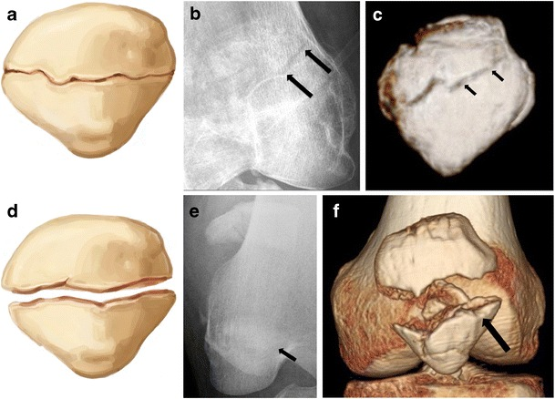
观察点：两名年轻成人的横行骨折对照。上排（a–c）：无移位横行骨折——示意图、正位 X 线、CT 三维重建，骨折线横贯髌骨体部；下排（d–f）：移位横行骨折——两骨折端分离。注意：上排与下排是两名不同患者，不是同一病例的时序。移位者支持带损伤风险更高——对应课程"分离的横形骨折多伴装置断裂"。Observation: transverse fractures in two young adults compared. Top row (a–c): non-displaced transverse fracture — drawing, AP radiograph, 3D CT reconstruction, fracture line across the patellar body; bottom row (d–f): displaced transverse fracture with fragment separation. Note: the two rows are two different patients, not one case over time. Displaced fractures carry higher retinacular injury risk — matching the course point that displaced transverse fractures usually mean a disrupted mechanism.
能证明：横行骨折的形态（无移位 vs 移位）、X 线与 CT 的互补。不能证明：伸膝装置查体所见；两名患者均为年轻成人，不能代表老年骨质疏松骨折。Shows: transverse fracture morphology (non-displaced vs displaced) and the complementary roles of X-ray and CT. Does not show: physical-exam findings of the extensor mechanism; both patients are young adults, not representative of elderly osteoporotic fractures.
来源：Jarraya M 等，"Imaging of patellar fractures"，《Insights into Imaging》2017，Fig. 3，CC BY 4.0（许可）· PMC 原文 · 两名独立患者Source: Jarraya M et al., "Imaging of patellar fractures", Insights into Imaging 2017, Fig. 3, CC BY 4.0 (license) · PMC article · two standalone patients
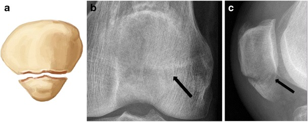
观察点：39 岁男性髌骨下极横行骨折：示意图、正位与侧位 X 线。本图展示下极骨折线；是否合并髌腱损伤、髌骨高度是否异常，应结合完整侧位片、查体及必要的进一步检查，不能只凭此图确定。Observation: transverse fracture of the lower pole in a 39-year-old man: drawing, AP and lateral radiographs. The image shows the lower-pole fracture line. Tendon integrity and patellar height require the full lateral view, examination and further investigation when indicated; this image alone is insufficient.
能证明：下极骨折的 X 线表现。不能证明：髌腱是否完全断裂（需超声/MRI）；与图 3-2 非同一患者。Shows: the X-ray appearance of an inferior pole fracture. Does not show: whether the patellar tendon is fully ruptured (needs ultrasound/MRI); not the same patient as Fig 3-2.
来源：Jarraya M 等，"Imaging of patellar fractures"，《Insights into Imaging》2017，Fig. 4，CC BY 4.0（许可）· PMC 原文 · 独立病例Source: Jarraya M et al., "Imaging of patellar fractures", Insights into Imaging 2017, Fig. 4, CC BY 4.0 (license) · PMC article · standalone case
初评和红旗Initial assessment & red flags
- 关键检查是伸膝装置：让患者做主动直腿抬高；能完成 → 装置可能完整；出现伸膝滞后 → 提示伸膝装置损伤（疼痛抑制也可能影响，需综合评估）。The key exam is the extensor mechanism: ask for an active straight-leg raise; able to do it → mechanism may be intact; extensor lag → suggests extensor injury (pain inhibition can also affect it; assess comprehensively).
- 触诊有无骨缺损（台阶感），观察关节积血。Palpate for a bony defect (step); look for hemarthrosis.
- 注意：髌旁支持带完整时，患者仍可能伸直膝盖，不能单凭"能伸直"排除骨折。Note: with intact retinacula, patients may still extend the knee — ability to extend does not rule out fracture.
- 开放性骨折：膝前位置表浅，开放并不少见 → 按开放骨折处理。Open fracture: the anterior knee is subcutaneous, so open injuries are not rare → manage as open fracture.
- 皮肤张力高、张力性水疱 → 警惕软组织坏死风险。Tense skin / tension blisters → risk of soft-tissue necrosis.
- 不要把髌前滑囊损伤误认为骨折，也不要漏掉开放伤的分级。Don't confuse prepatellar bursal injury with fracture; don't under-grade open injuries.
检查不确定时怎么办？What if the exam is uncertain?
- 对伸膝装置是否断裂有疑问时，可做超声或 MRI 明确股四头肌腱与髌腱情况（见来源）。When disruption is uncertain, ultrasound or MRI can clarify quadriceps/patellar tendon status (see sources).
影像 / 分类Imaging / classification
- 膝正侧位 + 髌骨轴位（skyline）；侧位最能显示分离程度。Knee AP/lateral + skyline views; the lateral best shows displacement.
- CT：评估粉碎程度与关节面台阶。CT: assess comminution and articular step-off.
- AO/OTA 34：关节外 / 部分关节内 / 完全关节内（描述性）；横形骨折伴分离通常意味着伸膝装置断裂。AO/OTA 34: extra-articular / partial-articular / complete-articular (descriptive); transverse fractures with separation usually mean a disrupted mechanism.
AO 原则如何适用How AO principles apply
- 恢复伸膝装置的连续性是第一目标，其次是关节面平整。Restoring extensor continuity is the first goal, then a smooth articular surface.
- 稳定固定允许早期活动，对抗膝僵硬。Stable fixation permits early motion, fighting knee stiffness.
- 髌骨血供相对脆弱、软组织覆盖薄，骨折与手术都可能进一步影响血运，手术要爱护软组织。The patella has relatively tenuous blood supply and thin soft-tissue cover, and both fracture and surgery can compromise it further — handle soft tissues gently.
治疗选择与限制Treatment options & limitations
- 伸膝装置完整 + 无移位/轻微移位：可考虑非手术——伸直位支具固定 4–6 周，允许负重（见来源）。Intact mechanism + undisplaced/minimally displaced: nonoperative may be considered — extension bracing 4–6 weeks with weight bearing allowed (see sources).
- 装置断裂或明显移位：手术重建——张力带、螺钉等，恢复装置连续与关节面。Disrupted mechanism or marked displacement: surgical reconstruction — tension band, screws, etc., restoring continuity and the joint surface.
- 限制：严重粉碎无法重建、患者全身情况不允许手术、开放伤软组织条件差——方案个体化。Limits: unreconstructable comminution, unfit patients, poor soft tissue in open injuries — individualize.
并发症 / 随访Complications / follow-up
- 膝僵硬：最常见，早期活动是预防关键。Knee stiffness: most common; early motion is key prevention.
- 创伤性髌股关节炎：关节面损伤越重风险越高。Patellofemoral arthritis: worse with greater articular injury.
- 内固定激惹/失败：髌前软组织薄，内植物激惹常见。Implant irritation/failure: common given thin prepatellar cover.
- 伸膝滞后：提示装置愈合不良，需复查。Extensor lag: suggests poor healing; re-evaluate.
病例自测Case quiz
Q1 · 45岁女性，跌倒后右膝肿痛，X线示髌骨横形骨折、分离约8mm。查体最能决定治疗方向的检查是？（合成教学病例）Q1 · A 45-year-old woman fell onto her knee; X-ray shows a transverse patella fracture with ~8 mm separation. The exam finding that most directs treatment is? (synthetic teaching case)
回答正确 ✓Correct ✓
再想想 ✗Try again ✗
答案：B。Answer: B.伸膝装置是否完整是分流治疗的关键：分离的横形骨折多伴装置断裂，需手术重建。Extensor integrity triages treatment: displaced transverse fractures usually mean a disrupted mechanism needing reconstruction.
Q2 · 关于髌骨骨折的说法，正确的是？Q2 · Which statement about patella fractures is correct?
回答正确 ✓Correct ✓
再想想 ✗Try again ✗
答案：A。Answer: A.辅助伸膝结构（内外侧髌旁支持带）完整时可代偿部分伸膝功能；膝前位置表浅，开放伤并不少见。Intact medial/lateral retinacula can compensate partly; the subcutaneous anterior knee makes open injuries not rare.
4胫骨平台骨折Tibial plateau fracture
软组织决定手术时机 · 分期处理 · 反复评估神经血管Soft tissue dictates timing · Staged management · Reassess neurovascular status
官方影像资源（AO Surgery Reference，站内查看）Official imaging (AO Surgery Reference, view on-site)
胫骨平台骨折官方页面含 AO 官方 X 线/CT 图例与官方教学视频（站内播放）：The tibial plateau pages carry official AO X-ray/CT figures and an official teaching video (on-site player):
AO Surgery Reference — Ring fixation for complete articular fracture with fragmentary lateral plateau
AO 图例与视频版权归 AO Foundation 所有，本课程仅链接原页，未复制、未热链、未嵌入（AO 未提供公开再发布许可）。AO figures and videos are © AO Foundation; this course links to the original pages only — not copied, hotlinked or embedded (AO offers no open redistribution license).
解剖与机制Anatomy & mechanism
- 胫骨平台：内侧大而凹、外侧小而凸，后倾约10°；内侧承担更多负荷。The plateau: medial is large and concave, lateral small and convex, with ~10° posterior slope; the medial side bears more load.
- 机制：轴向暴力 + 内外翻应力。年轻人多为高能量（车祸、坠落）；老年人骨质疏松，低能量跌倒即可骨折。Mechanism: axial load + varus/valgus stress. Young patients: high energy (traffic, falls); elderly osteoporotic patients: low-energy falls suffice.
- 典型形态：外侧劈裂塌陷最常见；高能量可致双髁粉碎。Typical pattern: lateral split-depression is most common; high energy can shatter both condyles.

观察点：右胫骨上端俯视：内侧半月板大而 C 形、外侧半月板小而 O 形；前后交叉韧带附着于髁间区。对应平台形态：内侧平台大而凹、外侧小而凸——外侧骨质相对薄弱，劈裂塌陷好发于外侧。理解这个形态差异，才能读懂图 4-2 的骨折。Observation: superior view of the right tibial head: medial meniscus large and C-shaped, lateral small and O-shaped; cruciate ligaments attach in the intercondylar area. Matches plateau morphology — medial large/concave, lateral small/convex — the lateral side is relatively weaker, where split-depression typically occurs. Grasping this difference is key to reading Fig 4-2.
能证明：内外侧平台的形态差异。不能证明：骨折；1918 年解剖图谱，非影像。Shows: the medial–lateral morphologic difference. Does not show: any fracture; a 1918 anatomy plate, not imaging.
来源：Henry Gray《Anatomy of the Human Body》(1918) Plate 349，绘图 Henry Vandyke Carter，公有领域 · Wikimedia Commons 原页 · 独立图例Source: Henry Gray, Anatomy of the Human Body (1918), Plate 349, illustrated by Henry Vandyke Carter, public domain · Wikimedia Commons file page · standalone figure
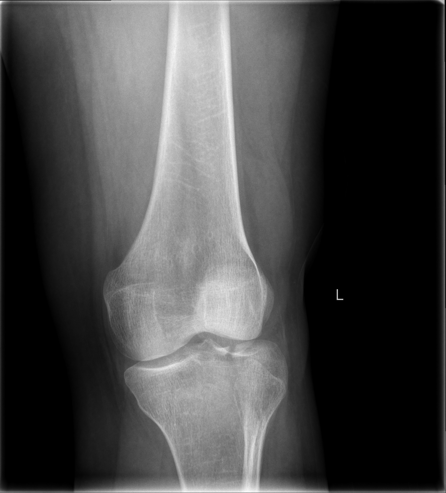
观察点：膝关节正位 X 线（L 标记）：外侧胫骨平台塌陷，关节面较内侧下沉、失去平整。对应"外侧劈裂塌陷"——平台骨折最常见的形态之一，与图 4-1 的外侧薄弱形态相呼应。Observation: AP knee X-ray (L marker): depressed lateral tibial plateau with loss of articular flatness compared with the medial side. Typical lateral split-depression — one of the most common plateau patterns, echoing the weaker lateral morphology in Fig 4-1.
能证明：外侧平台塌陷的 X 线表现。不能证明：塌陷的精确深度（需 CT）；软组织状态；与图 4-1 非同一来源。Shows: the X-ray appearance of lateral plateau depression. Does not show: the exact depth of depression (needs CT); soft-tissue status; not the same source as Fig 4-1.
来源：LottieLattes，Wikimedia Commons，CC BY-SA 4.0（许可）· 原页 · 独立病例Source: LottieLattes, via Wikimedia Commons, CC BY-SA 4.0 (license) · file page · standalone case
初评和红旗Initial assessment & red flags
- 软组织是第一位的：记录肿胀程度、水疱（血疱/张力性水疱）、皮肤张力、开放伤口。Soft tissue comes first: document swelling, blisters (hemorrhagic/tension), skin tension, open wounds.
- 神经血管每次都要查：足背动脉、足部感觉运动，腓总神经（绕腓骨颈）、腘血管（高能量双髁）。Neurovascular checks every time: pedal pulses, foot sensation/motion; peroneal nerve (around fibular neck), popliteal vessels (high-energy bicondylar).
- 骨筋膜室综合征：与损伤不成比例的剧痛、被动牵拉痛、感觉异常 → 紧急处理。Compartment syndrome: pain out of proportion, pain on passive stretch, paresthesia → emergency.
- 血管损伤：足部苍白、发凉、无脉 → 紧急血管评估。Vascular injury: pale, cool, pulseless foot → urgent vascular assessment.
- 开放骨折 / 膝关节脱位合并伤：按相应急诊流程处理。Open fracture / associated knee dislocation: follow respective emergency pathways.
影像 / 分类Imaging / classification
- 膝正侧位 + CT（含三维重建）：CT 是读懂关节面塌陷、劈裂范围的关键。Knee AP/lateral + CT (with 3D): CT is key to reading articular depression and split extent.
- Schatzker I–VI 描述骨折形态（描述性）；AO/OTA 41 B（部分关节内）/ C（完全关节内）（描述性）。Schatzker I–VI describes morphology (descriptive); AO/OTA 41 B (partial-articular) / C (complete-articular) (descriptive).
AO 原则如何适用How AO principles apply
- 关节面解剖复位、力线恢复、稳定固定、早期活动——四个目标不变。Anatomic articular reduction, alignment restoration, stable fixation, early motion — the four goals stand.
- 但软组织决定时机：肿胀高峰期强行切开 = 伤口灾难。对高能量复杂平台骨折、软组织明显受损者，AO 建议先临时复位固定、待软组织恢复后再做充分术前计划、分期手术；span – scan – plan 只是教学概括（非 AO 原话），不是所有平台骨折都一律分期。But soft tissue dictates timing: cutting through peak swelling invites wound disaster. For high-energy complex plateau fractures or compromised soft tissue, AO recommends temporary reduction and fixation until soft tissues recover, then full preoperative planning and staged surgery; "span – scan – plan" is only a teaching summary (not AO's wording) — not every plateau fracture needs staging.
分期三步具体做什么？What happens in each stage?
- Span（跨）：临时复位固定（如跨关节外固定架），恢复长度与力线、稳定骨折、保护软组织，直到软组织恢复。Span: temporary reduction and fixation (e.g., spanning external fixator) restores length and alignment, stabilizes the fracture and protects soft tissue until it recovers.
- Scan（看）：用 CT 精细评估关节面、制定充分的手术计划；同时等待肿胀消退、擦伤愈合，出现皮纹征。Scan: detailed CT assessment of the articular surface with full surgical planning; meanwhile wait for swelling and abrasions to resolve and the wrinkle sign to appear.
- Plan（定）：软组织恢复后，仍需综合全身情况、软组织、感染风险并由专科判断，再行确定性切开复位内固定——皮纹出现不是自动手术指征。Plan: once soft tissues recover, definitive ORIF still requires overall, soft-tissue and infection assessment with specialist judgment — the wrinkle sign is not an automatic indication.
治疗选择与限制Treatment options & limitations
- 稳定、无移位：可考虑非手术（支具、早期活动），但需密切随访。Stable, undisplaced: nonoperative may be considered (bracing, early motion) with close follow-up.
- 劈裂：拉力螺钉；塌陷：撬拨复位 + 植骨 + 支撑钢板；双髁粉碎：双钢板或外固定。Split: lag screws; depression: elevation + bone graft + buttress plate; bicondylar comminution: dual plating or external fixation.
- 限制：严重粉碎、骨质疏松（固定把持力差）、软组织不允许、血管神经损伤未处理——都可能改变方案或推迟手术。Limits: severe comminution, osteoporosis (poor purchase), hostile soft tissue, unaddressed neurovascular injury — all may change or delay the plan.
并发症 / 随访Complications / follow-up
- 关节僵硬、力线不良、创伤性关节炎。Joint stiffness, malalignment, post-traumatic arthritis.
- 伤口感染/裂开：与切开时机和软组织处理直接相关。Wound infection/dehiscence: directly tied to timing and soft-tissue handling.
- 随访：复查力线与关节面、渐进负重、康复锻炼；警惕迟发塌陷。Follow alignment and articular surface, progressive weight bearing, rehab; watch for late subsidence.
病例自测Case quiz
Q1 · 35岁男性，高处坠落致右侧胫骨平台双髁粉碎骨折，小腿高度肿胀、张力性水疱。此时最合适的处理是？（合成教学病例）Q1 · A 35-year-old man fell from height: bicondylar tibial plateau fracture, markedly swollen leg with tension blisters. The most appropriate step now is? (synthetic teaching case)
回答正确 ✓Correct ✓
再想想 ✗Try again ✗
答案：B。Answer: B.软组织决定时机：张力性水疱时强行切开极易导致伤口灾难。先跨关节外固定恢复力线、待软组织恢复，皮纹出现后仍需综合全身与感染情况、由专科判断再确定手术。Soft tissue dictates timing: cutting through tension blisters invites wound disaster. Span first to restore alignment, wait for soft-tissue recovery; even after the wrinkle sign, the decision still needs overall and infection assessment with specialist judgment.
Q2 · 胫骨平台骨折患者，足部发凉、苍白，足背动脉搏动消失。首先要考虑？Q2 · Tibial plateau fracture with a cool, pale foot and absent pedal pulse. First concern?
回答正确 ✓Correct ✓
再想想 ✗Try again ✗
答案：A。Answer: A.高能量平台骨折可伤及腘血管；无脉的肢体是血管急症，不能只归因于肿胀。High-energy plateau fractures can injure popliteal vessels; a pulseless limb is a vascular emergency, not just swelling.
来源与媒体许可Sources & media licensing
- AO Surgery Reference — Ring fixation for complete articular fracture with fragmentary lateral plateau
- AO Surgery Reference — ORIF – Conventional plating for complete simple articular fracture with simple metaphyseal components
- AO Surgery Reference — ORIF – Conventional plating for complete articular fracture with fragmentary lateral plateau
- AO Surgery Reference — Bridging external fixation (temporary) for complete articular fracture with fragmentary lateral plateau
5踝关节骨折Ankle fracture
踝穴稳定是核心 · 软组织与分期 · 神经血管一个都不能漏Mortise stability is central · Soft tissue & staging · Miss no neurovascular check
官方影像资源（AO Surgery Reference，站内查看）Official imaging (AO Surgery Reference, view on-site)
踝关节骨折官方术式页面含 AO 官方 X 线/CT 图例（双踝、三踝、下胫腓分离的 ORIF）：The malleoli procedure pages carry official AO X-ray/CT figures (ORIF for bi-/trimalleolar and syndesmotic injuries):
AO Surgery Reference — ORIF for transsyndesmotic, posterior, lateral simple, and medial fractures
AO 图例版权归 AO Foundation 所有，本课程仅链接原页，未复制、未热链（AO 未提供公开再发布许可）。AO figures are © AO Foundation; this course links to the original pages only — not copied or hotlinked (AO offers no open redistribution license).
解剖与机制Anatomy & mechanism
- 踝穴由胫骨穹窿、内踝、外踝（腓骨）与距骨构成；下胫腓联合（前后联合韧带、骨间韧带）维持踝穴稳定。The mortise comprises the tibial plafond, medial and lateral (fibular) malleoli and the talus; the syndesmosis keeps it stable.
- 机制：足的旋前/旋后 + 外旋/内收暴力；Weber 分型只看腓骨骨折线相对下胫腓联合的位置：A 在下、B 平齐、C 在上。Mechanism: pronation/supination + rotation/adduction forces; Weber looks only at the fibular fracture level vs the syndesmosis: A below, B at, C above.
- 位置越高，下胫腓联合损伤可能越重。The higher the level, the greater the potential syndesmotic injury.

观察点：右距小腿关节与距跟关节冠状切面：胫骨延续为内踝、腓骨延续为外踝——两骨为独立骨块；下胫腓骨间韧带（联合）位于两骨之间；距骨坐于踝穴内、胫骨穹窿之下。这正是"踝穴由胫骨穹窿、内外踝与距骨构成、下胫腓联合维持稳定"的解剖对应。Observation: coronal section through the right talocrural and talocalcaneal joints: the tibia continues as the medial malleolus and the fibula as the lateral malleolus — two separate bones; the syndesmotic interosseous ligament lies between them; the talus sits in the mortise beneath the tibial plafond. This is the anatomic correlate of "the mortise comprises the tibial plafond, malleoli and talus, stabilized by the syndesmosis".
能证明：踝穴的正常骨性结构（两块独立骨 + 联合 + 距骨）。不能证明：骨折或联合损伤；1918 年解剖图谱，非影像。Shows: the normal bony architecture of the mortise (two separate bones + syndesmosis + talus). Does not show: fractures or syndesmotic injury; a 1918 anatomy plate, not imaging.
来源：Henry Gray《Anatomy of the Human Body》(1918) Plate 357，绘图 Henry Vandyke Carter，公有领域 · Wikimedia Commons 原页 · 独立图例Source: Henry Gray, Anatomy of the Human Body (1918), Plate 357, illustrated by Henry Vandyke Carter, public domain · Wikimedia Commons file page · standalone figure
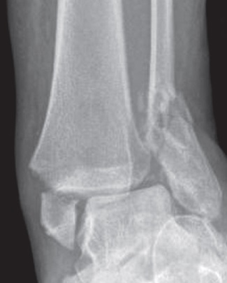
观察点：踝关节正位 X 线：内踝骨折伴移位、外踝（腓骨远端）骨折，即双踝骨折。双踝骨折意味着踝穴环两处断裂，多不稳定，常需切开复位内固定以恢复踝穴——对应"不稳定 / 双踝 / 三踝：切开复位内固定"的治疗原则。Observation: frontal ankle X-ray: displaced medial malleolar fracture plus distal fibular (lateral malleolar) fracture — a bimalleolar fracture. Two breaks in the malleolar ring usually mean instability, often requiring ORIF to restore the mortise — matching the "unstable / bi- / trimalleolar: ORIF" principle.
能证明：双踝骨折的 X 线表现（内外踝均骨折）。不能证明：下胫腓联合是否损伤（需应力位/CT）；与图 5-1 非同一来源。Shows: the X-ray appearance of bimalleolar fracture (both malleoli fractured). Does not show: whether the syndesmosis is injured (needs stress views/CT); not the same source as Fig 5-1.
来源：Tellisi N, Abdulkareem IS, Giannoudis PG，"Combined ipsilateral calcaneal and bimalleolar ankle fractures treated by open reduction and internal fixation"，OA Case Reports 2012;1(1)，DOI 10.13172/2052-0077-1-1-288，经 Wikimedia Commons 以 CC BY 4.0 发布（许可）· 原页 · 独立病例Source: Tellisi N, Abdulkareem IS, Giannoudis PG, "Combined ipsilateral calcaneal and bimalleolar ankle fractures treated by open reduction and internal fixation", OA Case Reports 2012;1(1), DOI 10.13172/2052-0077-1-1-288, via Wikimedia Commons under CC BY 4.0 (license) · file page · standalone case
初评和红旗Initial assessment & red flags
- 看 → 摸 → 动：畸形、肿胀、瘀斑；压痛部位；观察自然体位与自主活动受限，不主动诱发不稳。Look → feel → move: deformity, swelling, ecchymosis; tender points; resting position and limited spontaneous motion; do not deliberately provoke instability.
- 触诊全长腓骨：近端压痛 → 警惕 Maisonneuve 损伤（高位腓骨骨折 + 下胫腓分离）。Palpate the full-length fibula: proximal tenderness → suspect Maisonneuve injury (proximal fibular fracture + syndesmotic disruption).
- 神经血管：足背动脉、足部感觉运动；初评及每次复位操作前后都要记录。Neurovascular: pedal pulses, foot sensation/motion; document at initial assessment and before and after each reduction.
- 开放骨折：踝部皮下就是骨头，开放伤常见 → 按开放骨折处理。Open fracture: bone is subcutaneous at the ankle, so open injuries are common → manage as open fracture.
- 明显移位/脱位：即使计划手术，也要尽快复位，减轻软组织与神经血管压迫。Marked displacement/dislocation: reduce ASAP even if surgery is planned, to relieve soft-tissue and neurovascular compression.
- 张力性水疱、皮肤发亮发白：软组织危象的信号。Tension blisters, shiny pale skin: signals of soft-tissue crisis.
- 糖尿病、血管病变：显著增加伤口并发症风险，需专科个体化评估、优化风险并制定稳定策略，而非自动更保守。Diabetes, vascular disease: significantly raise wound-complication risk; they need specialist individualized assessment, risk optimization and a stability-oriented plan — not automatic conservatism.
影像 / 分类Imaging / classification
- 踝正位 + 踝穴位（内旋15–20°）+ 侧位；疑 Maisonneuve → 加拍全长胫腓骨。Ankle AP + mortise (15–20° internal rotation) + lateral; suspected Maisonneuve → add full-length tibia-fibula films.
- 应力位（重力应力位）：帮助判断 Weber B 的稳定性；手法应力须由专科判断，不要主动诱发不稳；CT：看后踝骨折块与关节面。Stress views (gravity stress): help judge stability in Weber B; manual stress needs specialist judgment — do not actively provoke instability; CT: assess the posterior malleolar fragment and joint surface.
- Weber A/B/C（看腓骨水平，描述性）；Lauge-Hansen（看损伤机制，描述性）。Weber A/B/C (fibular level, descriptive); Lauge-Hansen (injury mechanism, descriptive).
AO 原则如何适用How AO principles apply
- 恢复腓骨长度与旋转：腓骨短了、转了，踝穴就不对。Restore fibular length and rotation: a short or rotated fibula means a malreduced mortise.
- 踝穴解剖复位：距骨必须正位于踝穴中央。Anatomic mortise reduction: the talus must sit centered.
- 稳定的下胫腓联合：联合不稳要固定（定位螺钉等方式，遵术式规范）。Stable syndesmosis: fix it when unstable (positioning screws etc., per technique standards).
- 固定顺序没有通用模板：按 CT 骨折形态、手术入路、软组织条件与稳定性要求制定；例如经后外侧入路可先固定后踝（Volkmann 块）+ 腓骨，再经内侧入路固定内踝（见 AO 官方页面）。There is no universal fixation sequence: plan the order from CT morphology, surgical approach, soft tissue and stability needs; e.g., via a posterolateral approach the posterior malleolus (Volkmann fragment) + fibula may be fixed first, then the medial side (see AO page).
治疗选择与限制Treatment options & limitations
- 稳定、无移位（如孤立外踝无距骨移位）：可非手术（支具/石膏），但需随访防移位。Stable, undisplaced (e.g., isolated lateral malleolus without talar shift): nonoperative (brace/cast) with follow-up against displacement.
- 不稳定 / 双踝 / 三踝：切开复位内固定，恢复踝穴。Unstable / bi- / trimalleolar: ORIF to restore the mortise.
- 肿胀明显：先复位 + 石膏托 + 抬高，分期手术（皮纹征后，仍需综合全身、软组织与感染情况、由专科判断再做）。Marked swelling: reduce + backslab + elevation, staged surgery (after the wrinkle sign, the decision still needs overall, soft-tissue and infection assessment with specialist judgment).
- 限制：糖尿病/血管病变（伤口风险高，需个体化优化）、严重肿胀、依从性差——都可能让方案调整或分期。Limits: diabetes/vascular disease (high wound risk, needs individualized optimization), severe swelling, poor compliance — all may modify the plan or require staging.
并发症 / 随访Complications / follow-up
- 畸形愈合（尤其腓骨短缩旋转）→ 踝穴不正 → 创伤性关节炎。Malunion (especially fibular shortening/rotation) → malreduced mortise → post-traumatic arthritis.
- 下胫腓复位不良：术中要用影像确认。Syndesmotic malreduction: confirm with intraoperative imaging.
- 伤口问题：踝部软组织薄，感染/裂开后果严重。Wound problems: thin cover; infection/dehiscence has serious consequences.
- 随访：复查踝穴对位、渐进负重；内固定激惹可在愈合后考虑取出。Follow mortise alignment, progressive weight bearing; remove symptomatic implants after healing.
病例自测Case quiz
Q1 · 22岁男性，扭伤后右踝肿痛，X线示腓骨骨折线在下胫腓联合水平（Weber B），内踝压痛明显。查体还必须做哪一项？（合成教学病例）Q1 · A 22-year-old man twisted his ankle; X-ray shows a fibular fracture at the syndesmosis (Weber B) with marked medial tenderness. What exam step is still mandatory? (synthetic teaching case)
回答正确 ✓Correct ✓
再想想 ✗Try again ✗
答案：C。Answer: C.任何踝骨折都要摸全长腓骨：近端压痛提示 Maisonneuve 损伤，漏诊会导致下胫腓不稳被忽视。Always palpate the full fibula: proximal tenderness suggests Maisonneuve injury; missing it leaves syndesmotic instability unaddressed.
Q2 · Weber 分型的依据是？Q2 · The Weber classification is based on?
回答正确 ✓Correct ✓
再想想 ✗Try again ✗
答案：B。Answer: B.Weber 只看一点：腓骨骨折线在联合水平下（A）、平齐（B）还是上（C）。记住：分类描述形态，不直接等于手术指征。Weber asks one thing: the fibular line below (A), at (B), or above (C) the syndesmosis. Remember: classification describes morphology; it does not equal indication.
来源与媒体许可Sources & media licensing
- AO Surgery Reference — Malleoli fracture management with minimal resources
- AO Surgery Reference — Transsyndesmotic, lateral isolated simple fracture (definition)
- AO Trauma — ORP Handout: Malleolar fractures (PDF, official)
- AO Surgery Reference — ORIF for transsyndesmotic, posterior, lateral simple, and medial fractures